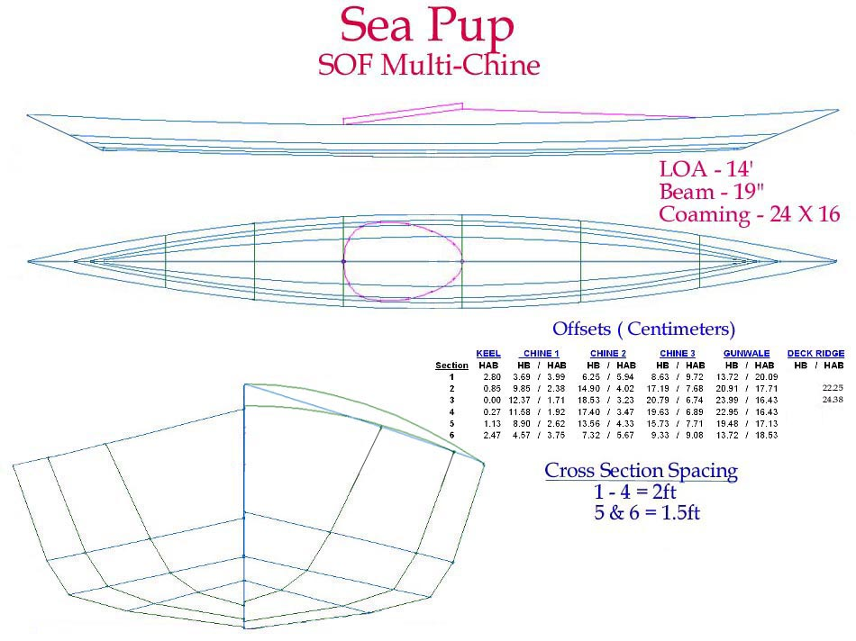

| Sea Pup Offsets ( 2 of 3) | Menu Last Page Next Page |
|
 Sea Pup Multi-Chine for wood or aluminum construction. Aluminum stringers consist of 3/4" gunwales, keel, and deckridge and 1/2" chines ( 3 per side). Wood stringers include 1.5" X 3/4" gunwales, 1" X 3/4" keel, and 3/4" X 3/4" chines. |
|